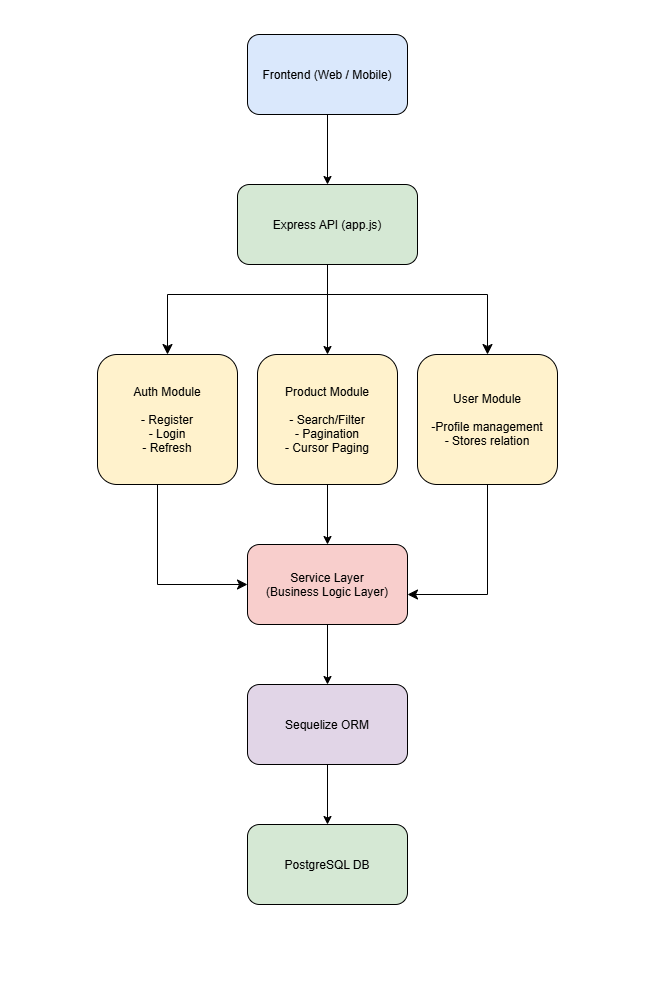
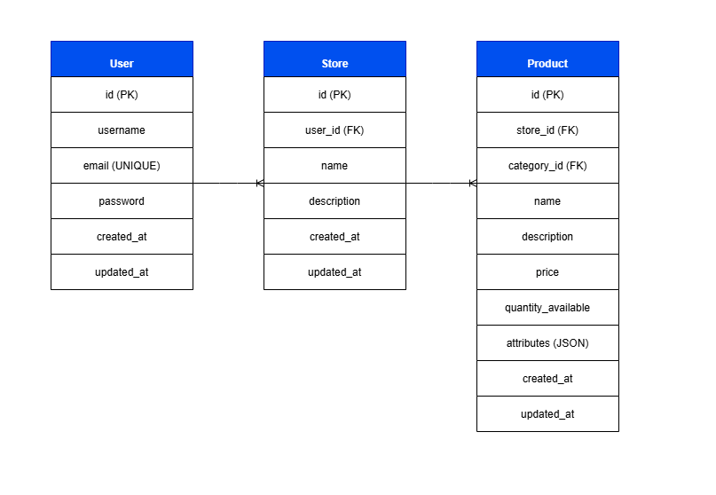

This case study documents the architecture, technical decisions, implementation details, and lessons learned while serving as the sole backend developer on a mobile marketplace platform.
This project involved building the backend for a multi-tenant eCommerce marketplace platform where a single user can create and manage multiple independent stores under one account. Each store operates as a separate entity with its own product catalog, pricing, inventory, and store metadata, while sharing a unified backend infrastructure.
The platform serves two primary user groups: store owners and customers. Store owners use the system to create stores, manage products, update pricing, handle inventory, and maintain product listings. Customers interact with the marketplace by browsing stores, viewing products, and (in later phases) completing purchases through a cart and checkout system.
The core business requirement was to support a scalable multi-store architecture with strict data isolation between stores, secure authentication and authorization, and efficient product discovery through search, filtering, sorting, and pagination. The system was designed to support mobile-first usage via an Ionic frontend consuming a RESTful API built in Node.js.
Key project goals included designing a maintainable backend architecture with clear separation of concerns, implementing production-ready authentication and security mechanisms, and building a foundation that could scale to support future features such as orders, payments, reviews, and analytics.
I was responsible for the end-to-end backend implementation, including system architecture design, database modeling, API development, authentication and authorization, rate limiting, structured logging, and API documentation. I also owned backend technical decisions throughout the project, including security design, architecture choices, and implementation standards.

The backend system is designed as a modular monolith with a layered architecture, structured to enforce clear separation of concerns while maintaining a single deployable unit. This approach was chosen to balance short-term development speed with long-term scalability, allowing the system to evolve toward a microservices architecture if required.
Each domain (authentication, users, stores, products, and orders) is isolated into its own module with consistent internal structure. Every module follows a strict layered pattern consisting of routes, controllers, services, and repositories. This ensures that HTTP handling, business logic, and data access remain fully decoupled, improving maintainability and reducing coupling across the codebase.
The request lifecycle follows a predictable pipeline: requests pass through global middleware for cross-cutting concerns such as logging and security, then route-level middleware for authentication and authorization, before reaching controllers. Controllers delegate business logic to services, which coordinate domain rules and application workflows. Services interact with repositories, which encapsulate all database operations. This strict flow enforces consistency across the entire system and simplifies debugging, testing, and future refactoring.
Several architectural alternatives were evaluated during the design phase. A traditional MVC structure was considered but rejected due to its tendency to couple business logic with controllers, leading to scalability and maintainability issues in larger systems. A microservices architecture was also considered but deemed unnecessary for the current scale of the platform, as it would introduce significant operational overhead, distributed system complexity, and deployment challenges at an early stage.
The modular monolith approach was ultimately selected because it provides strong domain separation without the complexity of distributed systems. Each module is effectively self-contained, making it possible to extract individual services into microservices in the future with minimal refactoring. This makes the architecture both pragmatic for MVP development and strategically aligned with long-term scalability requirements.
The system is fully asynchronous and non-blocking, leveraging Node.js to handle concurrent requests efficiently. API design follows RESTful principles with versioned endpoints, supporting core capabilities such as CRUD operations, filtering, pagination, searching, and sorting. This ensures the backend can support a responsive mobile-first experience through the Ionic frontend.
Security and reliability are enforced through dedicated middleware layers, including JWT-based authentication, role-based access control (RBAC), structured error handling, and request validation. These concerns are intentionally centralized to ensure consistent enforcement across all modules.
Overall, the architecture prioritizes maintainability, scalability, and clarity of structure. It reflects a deliberate trade-off between rapid delivery and long-term system evolution, providing a solid foundation for extending the platform into a full-featured marketplace ecosystem.

The database was designed as a relational SQL schema using a fully normalized structure to ensure data integrity, reduce redundancy, and support scalable multi-tenant marketplace operations. The design centers around a clear separation of core domain entities: users, stores, products, categories, product images, and authentication tokens.
At the core of the system is the User entity, which represents marketplace account holders. Each user can own multiple stores, establishing a one-to-many relationship between users and stores. This enables the multi-tenant model where a single user can operate multiple independent storefronts within the same system.
Each Store belongs to exactly one user and acts as an isolated container for product management. Stores maintain a one-to-many relationship with products, meaning each store can independently manage its own product catalog without interference from other stores. This structure enforces tenant isolation at the application level through foreign key constraints and query scoping via user_id and store_id.
The Product entity represents the core marketplace item and is linked to both a store and a category. Each product belongs to a single store and a single category, enabling structured product organization and efficient querying. Products also support flexible attributes stored as JSON, allowing dynamic extension of product metadata (such as size, color, or custom specifications) without requiring schema changes.
Products have a one-to-many relationship with ProductImage, allowing multiple images per product. This supports primary image designation and sorting, enabling consistent product presentation in the frontend. Cascade delete rules ensure that product images are automatically removed when a product is deleted, maintaining referential integrity.
The Category system is implemented as a self-referential hierarchical structure using a parent-child relationship. This enables nested category trees (e.g., Electronics → Mobile Phones → Smartphones) while maintaining a single table design. Indexed parent_id and slug fields support efficient hierarchical traversal and fast lookup operations.
Authentication is supported through a dedicated RefreshToken entity, which maintains a one-to-one relationship with users. Each token is stored with an expiration timestamp and uniquely indexed to support secure session management and token revocation strategies. This design enables stateless authentication while preserving control over active sessions.
Several indexing strategies were implemented to optimize query performance across high-traffic operations. Indexes were added on frequently queried fields such as user_id, store_id, and category_id, as well as composite indexes such as (store_id, category_id) to accelerate filtered product queries. These decisions were made to ensure efficient product listing, filtering, and store-scoped retrieval at scale.
The schema follows third normal form (3NF) principles to eliminate redundancy and ensure consistent data representation. Each entity is responsible for a single domain concept, and relationships are expressed explicitly through foreign keys rather than embedded duplication. The only intentional denormalization is the use of JSON-based product attributes, introduced to support flexible product metadata without compromising schema stability.
From a scalability perspective, the design supports horizontal growth at the application layer through strict use of indexed foreign keys and predictable query patterns. The separation of concerns between stores and products allows future partitioning strategies if required, while the modular category system supports expansion into large product taxonomies without structural changes.
Overall, the database design prioritizes relational integrity, query performance, and long-term extensibility. It provides a stable foundation for core marketplace operations while remaining flexible enough to support future enhancements such as orders, payments, and advanced recommendation features.
The authentication and authorization system is built around a hybrid JWT-based stateless authentication model combined with persistent refresh token storage to enable secure session management, token rotation, and controlled revocation. The design was implemented to balance security requirements with scalability and ease of use in a mobile-first marketplace environment.
Authentication is handled using JSON Web Tokens (JWT). Upon successful registration or login, the system issues an access token and a refresh token. The access token is signed using a dedicated JWT secret and is used to authorize protected API requests. The refresh token is separately signed, then hashed using SHA-256 before being stored in the database, ensuring that raw tokens are never persisted in storage.
Password security is enforced using bcrypt hashing with a salt factor of 10. Passwords are never stored in plaintext. During authentication, submitted credentials are validated by securely comparing the hashed password stored in the database with the provided input, ensuring resistance to timing-based attacks.
The authentication lifecycle is implemented through a dedicated service layer responsible for user registration, login, token issuance, token refresh, and logout operations. During registration, a new user is created and an initial refresh token is generated, hashed, and stored. During login, credentials are validated and a new token pair is issued, with refresh tokens being persisted or updated via an upsert strategy.
Refresh token management follows a rotation-based strategy. Each refresh operation validates the existing token, issues a new token pair, and replaces the previous refresh token record in the database. This approach reduces the risk of token reuse and replay attacks while ensuring that only the most recently issued refresh token remains valid. Token expiry is enforced using a 7-day lifecycle at the database level.
Authorization is enforced using a JWT verification middleware that intercepts incoming requests and validates access tokens either from HTTP-only cookies or Authorization headers. Once validated, the decoded user payload is attached to the request context, enabling downstream controllers and services to enforce ownership and access control rules.
Role-based access control (RBAC) is implemented at the application layer to distinguish between user capabilities. Store ownership checks are enforced explicitly in service logic to ensure that users can only access or modify resources associated with their own stores. This prevents cross-tenant data access in the multi-store architecture.
A custom authentication middleware provides flexible token resolution by supporting both cookie-based authentication and Bearer token headers. This allows the system to support multiple client types while maintaining a consistent security model across all endpoints.
Security is further strengthened through additional middleware layers including Helmet for HTTP security headers, request validation middleware for input sanitization, and token bucket rate limiting to protect authentication endpoints from brute-force and abuse patterns. These layers ensure consistent enforcement of security policies before requests reach business logic.
The logout process is implemented by invalidating refresh tokens in the database. When a logout request is received, the corresponding hashed refresh token is located and deleted, immediately revoking session continuity and preventing further token refresh operations.
Overall, the system provides a secure, scalable authentication and authorization framework that supports stateless API access, controlled session management, and strict tenant isolation. The design prioritizes security best practices while remaining flexible enough to support multiple client types and future extensions such as role expansion and advanced permission systems.
The backend implements a distributed token bucket rate limiting system to protect critical API endpoints from abuse, brute-force attacks, and traffic spikes. The implementation is built using Redis to ensure consistency across multiple instances and to support horizontal scaling in a production environment.
The rate limiting mechanism follows a token bucket algorithm where each client is assigned a virtual bucket of tokens. Each incoming request consumes one token, and tokens are gradually replenished over time based on a configurable refill rate. If the bucket is empty, the request is rejected with a 429 (Too Many Requests) response.
Each client is identified using a configurable key generator, defaulting to the request IP address. Rate limits are scoped per route by combining the client identifier with the request path, ensuring that different endpoints maintain independent rate limits rather than sharing a global quota. This allows fine-grained control over sensitive endpoints such as authentication while keeping less critical routes more permissive.
Redis is used as the backing store for the token bucket state. Each bucket stores the current token count and the timestamp of the last refill. On every request, the system calculates the elapsed time since the last update and dynamically refills tokens based on the configured refill rate. This ensures accurate rate limiting even under distributed deployments where multiple application instances may be handling requests concurrently.
When a request exceeds the allowed rate, the system responds with appropriate HTTP headers including X-RateLimit-Limit, X-RateLimit-Remaining, and Retry-After. These headers provide clients with visibility into their current usage and recovery timing, enabling more predictable client-side behavior under load.
The implementation includes safety considerations for production environments. If Redis becomes unavailable, the middleware fails open to avoid service disruption, allowing requests to proceed while logging the failure. This trade-off prioritizes system availability over strict enforcement during infrastructure degradation scenarios.
Several abuse scenarios were explicitly addressed in the design, including credential stuffing attacks on authentication endpoints, automated request flooding, and API scraping attempts. Sensitive routes such as login, registration, and token refresh are assigned stricter limits compared to general API endpoints, reducing the attack surface for high-risk operations.
The design supports configurable rate limiting policies per endpoint, allowing different max token thresholds and refill rates depending on endpoint sensitivity. For example, authentication routes use stricter limits than product browsing endpoints to balance security with usability.
From a scalability perspective, using Redis ensures that rate limiting remains accurate across multiple backend instances in a horizontally scaled deployment. This avoids inconsistencies that would arise with in-memory rate limiting and ensures consistent enforcement in production environments.
Overall, the rate limiting system provides a robust defensive layer that enhances API reliability, protects against abuse, and ensures predictable system behavior under load while remaining flexible enough to support future scaling and policy adjustments.
The product discovery system is designed to support scalable marketplace search across multiple stores, enabling users to efficiently browse large datasets while maintaining fast response times and predictable query behavior. All search and filtering logic is implemented at the database layer using Sequelize, ensuring that computations are pushed down to SQL for optimal performance.
Search functionality is implemented as a flexible partial text match across both product name and description fields.
This is achieved using SQL LIKE operators, allowing users to perform keyword-based discovery without requiring
external search engines. While this approach is simple and effective for an MVP, it trades off advanced ranking and relevance
scoring in favor of performance and ease of implementation.
Filtering is dynamically constructed through a structured query parsing layer that converts incoming request parameters
into a normalized filter object. The system supports price ranges, quantity availability ranges, store-based filtering,
category filtering, and dynamic JSON-based attributes. These filters are compiled into a Sequelize Op.and clause,
ensuring all constraints are applied efficiently at the database level.
Category filtering is designed to support hierarchical taxonomies. When a category slug is provided, the system resolves
the corresponding category and recursively retrieves all descendant category IDs. Products are then filtered using an
IN clause across the full category tree, enabling deep navigation through nested product structures.
Pagination is implemented using a cursor-based approach rather than traditional offset pagination. Each cursor encodes the last seen record’s sorting field, direction, value, and identifier. The cursor is then cryptographically signed using HMAC to prevent tampering and encoded in Base64 for transport. This ensures stateless, secure, and consistent pagination even under high-concurrency conditions where new records are continuously inserted.
Sorting is dynamically configurable via query parameters and supports multiple fields including price, creation date,
and available quantity. All sorting operations are stabilized with a secondary id sort to prevent duplicates
or missing records during pagination traversal. Cursor validation ensures that sorting configuration remains consistent
across requests, rejecting mismatches to preserve data integrity.
From a performance perspective, the system relies heavily on database indexing across frequently queried fields such as
store_id, category_id, and composite indexes for combined filters. Queries are constructed before
execution to avoid in-memory filtering, and pagination retrieves an extra record to efficiently determine whether additional
pages exist without executing a second query.
This design prioritizes scalability and maintainability. The current implementation supports efficient MVP-level performance while leaving room for future enhancements such as full-text search engines (e.g., Elasticsearch), faceted filtering, caching layers using Redis, and precomputed category trees for faster hierarchical traversal.
The backend implements a structured logging strategy designed to support debugging, auditing, and operational monitoring across all system modules. Logging is integrated at multiple layers of the application, including controllers, services, middleware, and global request handling.
The application uses a centralized logging configuration exposed through the config.logger interface.
This abstraction ensures consistent log formatting and allows the underlying logging implementation to be replaced or
extended without modifying business logic. Logs are emitted for key lifecycle events such as authentication, data mutations,
validation failures, and error handling paths.
At the request level, HTTP traffic is captured using morgan middleware with a custom logging stream.
This ensures that every incoming request is recorded with metadata such as HTTP method, route, response status,
and execution time. Additionally, security-related middleware such as helmet and rate limiting events
are implicitly observable through request logs.
Within business logic, structured logs are used extensively to track meaningful domain events. For example, authentication flows log user registration, login attempts, token issuance, refresh operations, and logout events. Similarly, product and store operations log key actions such as creation, updates, and retrieval failures. Each log entry includes contextual metadata such as user identifiers, email addresses (where appropriate), route information, and operation status.
Error handling is consistently integrated with logging across all modules. When exceptions occur, they are captured, enriched with contextual information, and logged before being returned as structured API responses. This ensures that both client-facing error messages and backend diagnostic data remain decoupled while still traceable.
The logging strategy also supports security and abuse detection use cases. Failed authentication attempts, invalid token usage, rate limit violations, and authorization failures are all explicitly logged. This provides visibility into potential attack patterns such as brute force login attempts or unauthorized resource access.
From an observability perspective, the system is designed to be production-ready by ensuring logs are structured, consistent, and enriched with metadata. This enables future integration with external monitoring and aggregation tools such as ELK Stack, Datadog, or Prometheus-based logging pipelines for centralized monitoring and alerting.
The API is documented using Swagger (OpenAPI specification), integrated directly into the Express application. Documentation is generated from inline JSDoc-style annotations placed above each route handler, ensuring that the API documentation remains tightly coupled with the actual implementation.
Each endpoint defines structured metadata including request parameters, request body schemas, response formats,
and example payloads. For example, the authentication module documents routes such as /auth/register,
/auth/login, /auth/refresh, and /auth/logout, clearly specifying required fields,
validation constraints, and expected response structures.
This approach ensures that API contracts are explicitly defined at the code level. For instance, product-related endpoints document complex query capabilities including filtering, sorting, search, cursor-based pagination, and category traversal. These annotations act as both developer documentation and runtime API specifications.
The Swagger UI is exposed via a dedicated route (/api-docs), allowing interactive exploration and testing of endpoints.
This enables developers to execute API calls directly from the browser without external tools, significantly improving development
speed and reducing integration friction between frontend and backend systems.
A key advantage of this implementation is synchronization between documentation and code. Since annotations are colocated with route definitions, any change in request validation, parameters, or response structure is immediately reflected in the API docs. This eliminates the risk of outdated or drifting documentation, which is a common issue in manually maintained systems.
From a collaboration perspective, Swagger acts as a shared contract between backend and frontend development. Frontend consumers can understand available endpoints, required inputs, and expected outputs without needing direct backend assistance. This reduces communication overhead and accelerates parallel development.
Additionally, the documentation improves maintainability by making system capabilities explicit and self-describing. New contributors can onboard faster by exploring the API structure through Swagger UI, while existing developers benefit from a reliable reference for debugging and feature extension.
The orders system is currently in active development. The design phase defines a complete eCommerce lifecycle that includes wishlist management, cart handling, order creation, and multi-store order item tracking. The architecture is structured to support transactional consistency, scalability, and clear separation between user intent (wishlist/cart) and finalized purchases (orders).
The system is divided into four core components: Wishlist, Cart, Orders, and OrderItems. Each component is modeled with explicit relational constraints to ensure data integrity and prevent duplication of user actions such as repeated wishlist entries or multiple active carts per user.
The Wishlist is implemented as a simple mapping between users and products through a WishlistItem entity.
A composite uniqueness constraint on (user_id, product_id) ensures that each product can only appear once per user.
This design supports lightweight "save for later" functionality without introducing unnecessary state complexity.
The Cart system is designed as a single active cart per user, enforced via a uniqueness constraint on user_id.
Each cart contains multiple CartItem entries, which store product references and quantities.
This structure ensures that cart state remains atomic per user while allowing flexible item-level manipulation.
The Order model represents a finalized purchase transaction. Each order belongs to a user and tracks its lifecycle through
explicit status states including pending, accepted, rejected, and completed.
This state machine allows for future integration with payment processing and fulfillment workflows.
Order items are stored separately in the OrderItem entity to preserve historical accuracy at the time of purchase.
Each order item captures product snapshots including product_name, unit_price, quantity, and store reference.
This ensures that changes to product data after purchase do not affect historical order records.
From a relational perspective, the system enforces clear entity associations: a user has one cart, a cart has many cart items, and cart items reference products. Similarly, a user has many orders, and each order contains multiple order items that map to products and stores. This structure supports multi-store order aggregation while preserving traceability of each purchased item.
Transaction handling and lifecycle management are planned as part of the next implementation phase. The current design anticipates atomic order creation flows where cart items are validated, stock availability is checked, and order items are generated within a single transactional boundary to ensure consistency across the system.
Overall, this architecture separates user intent (wishlist and cart) from committed state (orders), enabling a scalable and extensible foundation for future features such as payments, refunds, order tracking, and inventory reservation.
A key architectural challenge in this project was the initial mismatch between an MVP-first implementation approach and the longer-term scalability requirements outlined in the case study. While the immediate goal was to deliver a functional backend, the requirements also clearly indicated future migration toward a microservices-based architecture.
After analyzing the system requirements more deeply, it became evident that a purely monolithic MVP design would create significant refactoring overhead later, particularly around domain separation and service boundaries. To address this, a decision was proposed and agreed upon to adopt a modular monolith architecture instead of a tightly coupled monolithic structure.
This approach allows each business domain (auth, users, products, stores, orders, etc.) to exist as an independent module with clear boundaries, while still being deployed as a single application. This design significantly reduces future migration complexity, as modules can be extracted into microservices with minimal restructuring.
Within each module, a layered architecture was introduced to maintain separation of concerns. However, due to the MVP constraints, the design intentionally avoids excessive abstraction. Instead of implementing full repository interfaces and heavy abstraction layers, each module uses a simplified structure consisting of controllers, services, and utility functions. This decision balances maintainability with development speed while still preserving logical separation of responsibilities.
Another challenge was ensuring consistency in architectural decisions across the entire codebase while working under evolving requirements. This was mitigated by enforcing a standardized module structure and shared conventions for routing, error handling, and service composition.
A key takeaway from this project was the importance of designing systems around clear separation of concerns from the beginning. Structuring the backend into controllers, services, and repositories significantly improved maintainability and reduced coupling between business logic and data access layers.
Another important lesson was the value of designing APIs with future scalability in mind. Cursor-based pagination, structured filtering, and modular query parsing were more complex to implement initially, but they provided a strong foundation for handling large datasets without requiring architectural changes later.
Implementing authentication with hashed refresh tokens and token rotation reinforced the importance of treating security as a core architectural concern rather than an afterthought. Small decisions such as storing raw tokens versus hashed tokens have significant implications for system security.
The project also highlighted the tradeoff between simplicity and scalability. While some components, such as SQL LIKE-based search, were chosen for rapid development, they were intentionally designed to be replaceable with more advanced solutions like full-text search engines without requiring major refactoring.
Overall, this project strengthened practical understanding of backend system design, particularly in areas of multi-tenancy, API design consistency, database optimization, and production-grade security patterns. It reinforced the importance of writing systems that are both functional at MVP stage and structurally prepared for long-term scaling.